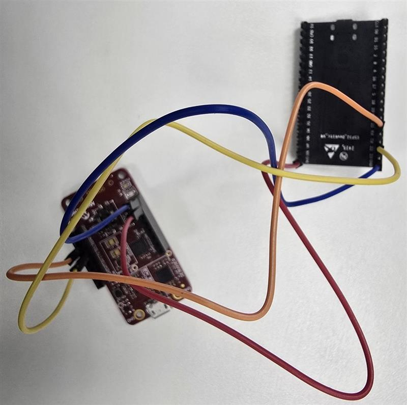

Build and deploy the ESP32 firmware using ESP-IDF (v5.3.1) with integrated KTA provisioning and NimBLE BLE stack.
Note: The keySTREAM Trust Agent (KTA) sources are vendored under
main/kta_provisioning/— there is no separatecomponents/kta/folder. The only ESP-IDF component shipped undercomponents/iscryptoauthlib.
Before building and flashing:
| Item | Purpose |
|---|---|
| ESP32 development board | Main microcontroller |
| ATECC608 Secure Element | Cryptographic key storage (I2C connected) |
| USB Micro-B cable | Power and data transfer (not charge-only) |
| Windows 10/11 with Bluetooth | Host computer for building and flashing |
| ESP-IDF v5.3.1 | Build framework (install once) |
The ESP32 uses a CP210x USB-to-UART chip. Install the driver:
CP210xVCPInstaller_x64.exeSilicon Labs CP210x ... (COM4)If not visible, try the CH340 driver instead: http://www.wch-ic.com/downloads/CH341SER_EXE.html
Connect the ATECC608 secure element to the ESP32 using the following I2C pins:
| ESP32 Pin | ATECC608 Pin | Description |
|---|---|---|
| GND | GND | Ground |
| 3V3 | 3V3 | Power (3.3V) |
| GPIO 21 | SDA | I2C Data |
| GPIO 22 | SCL | I2C Clock |

Download the Offline Installer for Windows from: https://dl.espressif.com/dl/esp-idf/
Run the installer, select v5.3.1, and install to C:\Espressif\. The installer lays out:
Every new PowerShell session must source the export script before idf.py is available:
You should see Done! You can now compile ESP-IDF projects. The **"ESP-IDF v5.3 PowerShell"** Start Menu shortcut performs this automatically.
If activation reports ...idf5.3_py3.12_env\Scripts\python.exe doesn't exist!, create the Python environment once, then re-run export.ps1:
A successful build ends with Project build complete. and produces firmware/build/keystream_ble.bin.
Use fullclean to remove all build artifacts (and managed_components) and start fresh:
Find your COM port in Device Manager → Ports (COM & LPT) and replace COM4 below:
Press Ctrl + ] to exit monitor. Expected output: Advertising started as ESP32-Keystream
| Problem | Fix |
|---|---|
idf.py not found | Run the export.ps1 command first to activate ESP-IDF |
...idf5.3_py3.12_env\Scripts\python.exe doesn't exist! | Run python.exe C:\Espressif\frameworks\esp-idf-v5.3.1\tools\idf_tools.py install-python-env, then re-run export.ps1 |
| COM port not visible | Install USB driver (CP210x or CH340); restart Device Manager |
| Flash fails "could not open port" | Close the monitor and ensure no other app uses the COM port; try a different (data-capable) USB cable |
| Build fails "configured for different project path" | Run idf.py fullclean then idf.py build again |
| Device not in BLE scan | Check monitor logs — should say Advertising started as ESP32-Keystream |
| Build errors with KTA library | Verify the sources under firmware/main/kta_provisioning/ are present; try idf.py fullclean |
| Device crashes / reset loop at boot | Run idf.py -p COM4 erase_flash, then flash again |
Cause: A stub definition of salSignHash in main/main.c conflicts with the real implementation in main/kta_provisioning/SOURCE/salapi/k_sal_crypto.c.
Fix: Remove the stub from main.c; keep only the #include "k_sal_crypto.h" line.
Cause: The BLE backend/SAL source files are not listed in main/CMakeLists.txt.
Fix: In main/CMakeLists.txt, ensure these lines are not commented out inside MAIN_SRCS:
Cause: The mcu_bridge_build custom target in main/CMakeLists.txt tried to run make in kta_provisioning/mcu/, but no Makefile exists there.
Fix: Use the current main/CMakeLists.txt, whose elseif(NOT EXISTS "${MCU_DIR}/Makefile") guard skips that custom target automatically.